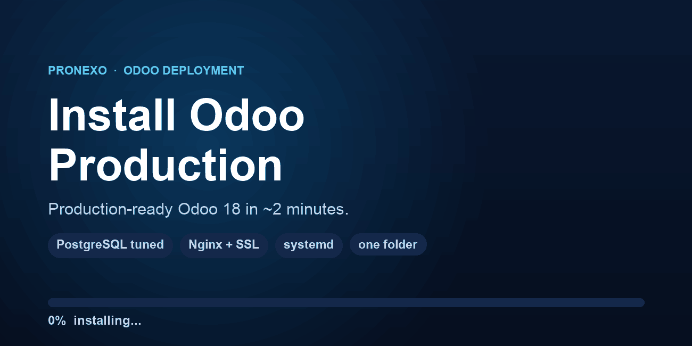

One script installs Odoo 18 with a tuned PostgreSQL, Nginx and free SSL — every library in a single folder, so moving to another server is a copy away.
One commandRun one script on a fresh Ubuntu 24.04 server and get a working, service-managed Odoo 18. No manual package hunting, no guesswork. |
PostgreSQL tuned for your servershared_buffers, cache, work_mem, connections and parallelism are sized from the machine's RAM and cores — conservatively, so Odoo and PostgreSQL share the box without fighting over memory. |
Odoo workers tuned tooWorker count and memory limits are computed from the same RAM and cores, so multi-processing is on and right-sized from the very first boot. |
Nginx reverse proxyA ready Nginx virtual host with gzip, static caching and the correct proxy headers for Odoo — longpolling included. |
Free HTTPSCertbot and the Let's Encrypt plugin are installed, so a trusted SSL certificate for your domain is one command away. |
One folder, easy to moveOdoo, the Python venv, the config, the addons and the data all live under a single /opt folder, so migrating to another server is a copy, not a reinstall. |
Handy shell commandsstart, stop, restart, status, log, econf, pconf, pgtune and workers are installed as commands, so day-to-day operations are a single word. |
Weekly backupA cron job zips the whole installation folder every week, so you always have a recent snapshot to restore from. |
Community or EnterpriseInstalls Odoo Community from the official source; drop your Enterprise addons into the extra-addons folder to run Enterprise. |
Built and tested for Ubuntu 24.04 LTS. Installs Odoo 18 from the official source with PostgreSQL 16, Nginx and Certbot.
Odoo development · Argentina
www.pronexo.com · soporte@pronexo.com · pronexo@gmail.com
Support & questions welcome before and after purchase.